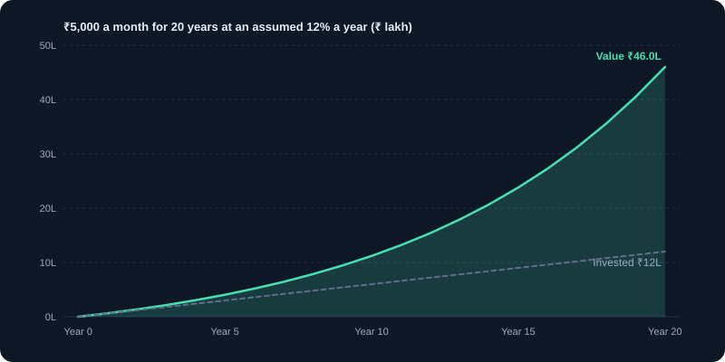
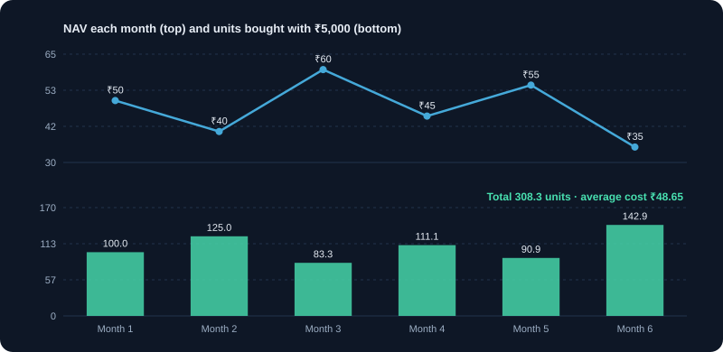

SIP & Mutual Funds
How a Systematic Investment Plan works, what NAV means, and how to read fund costs.
1. What a mutual fund is
A mutual fund pools money from many investors and invests it in a portfolio of securities, such as shares, bonds or both. A professional fund manager makes the investment decisions according to the fund's stated objective. You own units of the fund, and each unit represents a share of the whole portfolio.
- Advantages: diversification with a small amount, professional management, easy to start, and the option to invest regularly.
- Limitations: you pay fees, you do not choose individual securities, and the fund can still lose value.
- Regulation: mutual funds in India are regulated by SEBI and sold through registered distributors or directly.
2. How a SIP works
A SIP (Systematic Investment Plan) invests a fixed amount at regular intervals, usually monthly, into the scheme you choose. The amount is deducted from your bank account on the chosen date, and units are allotted at that day's NAV. Starting small is possible; many schemes accept small monthly amounts.
- Choose the amount, frequency (monthly is common), the date and the fund.
- Set the mandate with your bank or the fund platform, following the approval process they give you.
- Keep the SIP running through good and bad markets for the habit and for rupee cost averaging.
- You can pause, stop or change the amount. Check any exit load or lock-in before stopping.
3. NAV and units, with the arithmetic
NAV (net asset value) is the value of one unit. It is calculated at the end of each business day, based on the market value of the fund's holdings minus its liabilities, divided by the number of units. The number of units you get equals the amount invested divided by the NAV on the allotment day.
Example: you invest ₹5,000 on a day when NAV is ₹50. You get 100 units. If NAV is ₹40 the next month, your ₹5,000 buys 125 units. The NAV level itself does not show whether a fund is good; returns and costs matter.
4. Rupee cost averaging, explained with numbers
Because the same amount buys more units when NAV is low, your average cost per unit tends to be lower than the average NAV over the period. It is a way of investing that reduces the impact of buying at one high point. It does not guarantee profit, and it works only if the fund recovers or grows.
Example: NAVs of ₹50, ₹40 and ₹60 over three months with ₹5,000 each. Units: 100 + 125 + 83.33 = 308.33. Total invested ₹15,000. Average cost = ₹15,000 ÷ 308.33 ≈ ₹48.65, lower than the simple average NAV of ₹50.
5. Types of mutual funds
- Equity funds: invest mainly in shares. Higher potential return and higher volatility. Includes large-cap, mid-cap, small-cap, flexi-cap and thematic funds.
- Index funds and ETFs: copy an index such as NIFTY 50. Lower cost, no active stock picking.
- Debt funds: invest in bonds and money-market instruments. Generally lower volatility, but still carry interest-rate and credit risk.
- Hybrid funds: mix equity and debt, for example balanced advantage funds.
- ELSS (Equity Linked Savings Scheme): equity funds with a 3-year lock-in. Check the current tax-saving rules before choosing one for that purpose.
6. Costs: expense ratio, exit load and taxes
Costs reduce what you keep. Compare them before you choose a fund.
- Expense ratio: the yearly fee the fund charges, as a percentage of assets. It is deducted from the fund's value, so you see it in the NAV.
- Exit load: a fee if you redeem before a set period, for example 1% if sold within one year. Check the scheme document.
- Direct and regular plans: both invest in the same portfolio. Direct plans have a lower expense ratio because they have no distributor commission.
- Tax on gains: equity fund gains are taxed as shares. Debt fund rules differ. See the tax module for the current rules.
Example: on ₹10 lakh held for one year, a 2% expense ratio costs about ₹20,000, and 0.2% costs about ₹2,000. The difference compounds over years.
7. The mutual fund factsheet
Every scheme publishes a factsheet each month. Learn to read it before you invest.
- Investment objective: what the fund is trying to do. It should match your goal.
- Portfolio: the top holdings and the sector split. Check that it matches the description.
- Returns over 1, 3, 5 years and since inception, compared with its benchmark index.
- Risk measures such as standard deviation or the largest fall (drawdown) shown in the factsheet.
- Fund manager name and experience, and the expense ratio.
8. Choosing a fund: a simple process
- Match the fund category to your goal and time frame.
- Check the long-term record against its benchmark, not only the best year.
- Prefer lower costs when two funds are similar in strategy.
- Avoid holding many funds with the same holdings. Check overlap.
- Keep the number of funds small. Three to five well-chosen schemes are often enough for a beginner.
9. Stopping, pausing and redeeming
You can change or stop a SIP at any time, but check exit loads and tax before redeeming. Stopping during a fall locks in the loss and stops you buying cheap units. If the fund no longer matches your goal or its mandate has changed, switching may be sensible, but plan the tax effect first.
10. Common SIP mistakes
- Stopping the SIP when markets fall, which is when the next units are cheapest.
- Starting too many SIPs in similar funds.
- Judging a fund only by its NAV or by one year's return.
- Expecting a fixed return from an equity SIP.
- Ignoring the expense ratio and exit load.
Charts and visuals


Worked examples
Rupee cost averaging in action
You invest ₹5,000 each month. NAV goes 50, 40, 60. Units bought: 100, 125, 83.33. Total 308.33 units for ₹15,000, so your average cost is ₹15,000 ÷ 308.33 ≈ ₹48.65, lower than the simple average NAV of ₹50.
Projected SIP value
₹5,000 a month for 10 years at an assumed 12% a year gives about ₹11.2 lakh from ₹6 lakh invested. The growth (about ₹5.2 lakh) is only an estimate, because market returns vary.
Real-life scenarios
Market crashes 25% in month 6
Continuing the SIP buys more units while prices are low, so the average cost falls. Stopping the SIP locks in the loss and misses the recovery. Pausing only makes sense if your income or goals have changed.
Choosing between an equity and a debt SIP
A 15-year goal such as retirement suits equity funds, which carry more volatility. A 2-year goal such as a vehicle down payment suits debt funds, where the value is steadier.
Use cases
- Child's education planning with a monthly SIP that starts when the child is born.
- Building the habit of investing automatically, since the money leaves your account before you can spend it.
- Step-up SIP: increasing the monthly amount each year as your income grows.
Key takeaways
- A SIP is a method of investing; it does not guarantee profit.
- NAV is the price per unit, not a measure of how good a fund is. Compare returns and costs.
- Lower expense ratios leave more of the return with you.
- Match the fund type to your time horizon.
Key terms, explained
- SIP
- Systematic Investment Plan: investing a fixed amount at regular intervals into a fund.
- Mutual fund
- A pooled investment managed by a professional that holds a mix of securities.
- NAV (net asset value)
- The value of one unit of a mutual fund, calculated once a day after the market closes.
- Expense ratio
- The yearly fee a fund charges, as a percentage of assets.
- Index fund
- A fund that copies an index such as NIFTY 50, usually with low costs.
- ELSS
- Equity Linked Savings Scheme: an equity mutual fund with a lock-in period and tax benefits under Indian tax law. Check current rules.
- Rupee cost averaging
- Buying a fixed amount regularly, so you buy more units when prices are low and fewer when high. It does not guarantee a profit.
Questions learners ask
Can I stop or change my SIP at any time?
Usually yes. You can pause, stop or change the amount through your fund platform or broker. Check any lock-in rules for specific schemes such as ELSS.
Does an SIP guarantee returns?
No. An SIP is a method of investing. The value of the fund can go up or down, and returns are not guaranteed.
What is the difference between a direct and a regular plan?
Both invest in the same portfolio. A direct plan has a lower expense ratio because it has no distributor commission, so more of the return stays with you.
Educational content only, not investment advice. Markets carry risk, including loss of capital. Examples are simplified and may exclude charges, taxes and slippage.